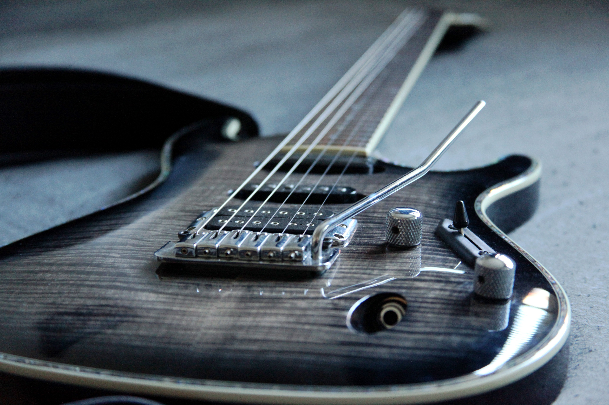

Pianino
Nauka gry na pianinie dla dzieci, młodzieży i dorosłych. Rozwijamy technike, słuch muzyczny oraz umiejętność interpretacji utworów, od pierwszych melodii po bardziej zaawansowany repertuar.
Indywidualna nauka instrumentu połączona z zajęciami grupowymi pozwala wybrać własną drogę: solisty, muzyka zespołowego lub kompozytora.
Nauka gry na pianinie dla dzieci, młodzieży i dorosłych. Rozwijamy technike, słuch muzyczny oraz umiejętność interpretacji utworów, od pierwszych melodii po bardziej zaawansowany repertuar.

Gra na gitarze akustycznej i elektrycznej. Poznaj akordy, rytmikę, improwizacje i pracę w zespole, rozwijając swój własny styl muzyczny.
Praca nad głosem, oddechem i interpretacją piosenek. Pomagamy rozwijać naturalne predyspozycje wokalne.
Nauka rytmu, koordynacji i gry na zestawie perkusyjnym. Zajęcia dostosowane do wieku i poziomu ucznia.
Twórz własną muzykę od podstaw – ucz się harmonii, tworzenia własnej melodii oraz aranżacji. Eksperymentuj z nowoczesnymi technologiami, tworząc muzykę filmową, elektroniczną, klasyczną lub autorskie piosenki. Swoją twórczość możesz nagrać w naszym studiu!
Każda ścieżka obejmuje cotygodniowe indywidualne zajęcia z wybranego instrumentu oraz zajęcia grupowe.Różnica polega na tym, dokąd prowadzi dana ścieżka.
Instrument + teoria muzyki + występy solowe
Dla osób, które chcą doskonalić grę na instrumencie, rozwijać muzykalność i przygotować się do występów lub egzaminów do szkoły muzycznej
Instrument + gra w zespole + nagrania studyjne
Dla osób, które chcą nie tylko grać na insturmencie, ale przede wszystkim tworzyć muzykę razem z innymi
Instrument + kompozycja + nagrania studyjne
Dla osób, które chcą tworzyć własną muzykę, rozwijać wyobraźnię i uczyć się świadomego komponowania
Zajęcia gordonowskie + nauka gry na instrumencie
Program dla najmłodszych, który rozwija słuch muzyczny, poczucie rytmu i muzykalność, a następnie wprowadza dziecko w świat gry na insturmencie.
Zajęcia dla dzieci i młodzieży, które łączą naukę śpiewu i aktorstwa z rozwijaniem kreatywności. Uczestnicy wspólnie tworzą scenariusz, muzykę i kolejne elementy spektaklu, ucząc się jednocześnie pracy zespołowej i swobodnego wyrażania siebie.
Prowadzimy zajęcia z zakresu muzykoterapii, arteterapii i socjoterapii dla dzieci i młodzieży. To autorski program, łączący różne dziedziny sztuki, wspierający rozwój emocjonalny, społeczny i twórczy uczestników. Zajęcia mogą być prowadzone indywidualnie lub w grupach, w zależności od potrzeb.
Tak! Możesz zmieniać wybraną ścieżkę w dowolnym momencie. Dzięki temu możesz lepiej dopasować program do swoich zainteresowań, potrzeb i rozwijających się umiejętności.
To my tworzymy grupę, dopasowując uczestników do siebie. Możesz jednak przyjść razem ze znajomymi i wspólnie stworzyć zespół!
Tak! Nie musisz mieć wcześniejszego doświadczenia. Nauczymy Cię gry na wybranym instrumencie. Na lekcjach indywidualnych będziesz rozwijać swoją technikę, a podczas zajęć zespołowych nauczysz się współpracy, wzajemnego słuchania, reagowania na innych muzyków i wspólnego tworzenia muzyki.
Absolutnie nie! Dopasowujemy lekcje do Twoich zainteresowań i oczekiwań. Wykorzystujemy różnorodne materiały i kreatywne metody, dzięki którym teoria muzyki staje się ciekawa, praktyczna i naprawdę przydatna!